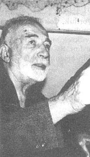

Refet Barutçu (1886-1975)

Bediüzzaman Said Nursi'nin talebelerinden olan Refet Barutçu, 1886'da Ýstanbul-Beykoz'da doðdu. Askeri okulda okuyarak subay oldu. Yüzbaþýlýða kadar yükseldikten sonra ordudan emekli oldu. Emekli iken boþ durmayarak Beþiktaþ Viþnezade Camiinde imamlýk yaptý. Hayatýný iman ve Kur'an hizmetine adayan Barutçu, Bediüzzaman'ýn dualarýna mazhar oldu. Bediüzzaman, ona yakýnlýðýný, mektuplarýný aldýðý zaman söylediði "rahatsýzlýklarýma, hastalýðýma þifa oldu" cümleleriyle ifade etmiþtir.Risale-i Nur'la tanýþtýktan sonra, bir taraftan Kur'an-ý Kerim'i öðretirken, diðer taraftan Kur'an'ýn mükemmel bir tefsiri olan Risale-i Nurlarýn yazýlmasý ve yayýlmasý için çalýþtý. Aralarýnda doktor Sadullah Nutku gibi önemli þahsiyetlerin de bulunduðu birçok kiþinin Risale-i Nur'larla tanýþmasýna vesile oldu. 2 Þubat 1975 tarihinde Ankara'da Hakk'ýn rahmetine kavuþtu.
Refet Bey'in Nur'lar ve Müellifi hakkýnda bilgi sahibi olmasý, Ýstanbul Sahaflar Çarþýsýnda, Abdurrahman Nursi tarafýndan kaleme alýnan, küçük bir kitapçýðý alýp okumasýyla baþlar (1921). Daha sonra namaz kýlmak için gittiði Bayezid Camiinde Bediüzzaman Hazretlerini, okunan Kur'an-ý Kerim'i huþu içinde dinlerken görür. Cami çýkýþýnda ise uzaktan birbirlerini görürler.
Isparta'da eniþtesinin yanýnda bulunduðu sýralarda her gün kütüphaneye giden Refet Bey, burada alimlerle ilgili yaptýklarý bir sohbette sözü Bediüzzaman'a getirip onu methedince kütüphanedeki memur, Bediüzzaman Hazretlerinin Barla'da bulunduðunu söyler. Bunun üzerine, ziyaretine gitmeye karar verir. Ziyaretinin sakýncalý olabileceði, bundan zarar göreceðinin söylenmesine raðmen, kararýndan vazgeçmez. Barla'ya giderek Bediüzzaman Hazretleri ile görüþür. Bu ziyaretten bir yýl sonra gönderdiði mektubunda, ilk defa kendisini Bayezid'te uzaktan gördüðünü yazan Refet Bey'e Bediüzzaman; "Kardaþým ben sizi daha o zaman talebeliðe kabul etmiþtim" karþýlýðýný verir.
Nurlara büyük bir sadakatle baðlanan Refet Bey'in mektubundaki, "Risale-i Nur'un en bariz hâsiyeti, usandýrmamak; yüz defa okunsa, yüz birinci defa yine zevkle okunabilir" þeklindeki sözlerine Bediüzzaman, "pek doðru demiþ" diyerek karþýlýk veriyordu. (Kastamonu Lahikasý, s. 166)
Bediüzzaman'ýn bazen, "Nur Kumandaný", bazen "Kur'an Aþýðý" diyerek hitap ettiði Refet Bey, birinci ziyaretinden sonra bir kez daha Bediüzzaman'ý Barla'da ziyaret etti. Bu ziyaretlerin dýþýnda sýký bir mektuplaþma da yaþandý. Birbirlerine çok sayýda özel mektuplar yazdýlar. Çok sayýda yazýlan müstakil veya arkadaþ gurubu mektuplarýna karþýlýk Bediüzzaman Hazretleri de Refet Bey'e yirmi ikisi özel olmak üzere toplam yirmi yedi tane mektup yazdý.
Risale-i Nur Külliyatý'nýn önemli bir bölümü talebelerinin Bediüzzaman'a sorduklarý sualler ve o suallere verilen cevaplardan oluþmaktadýr.
Refet Beyin de en önemli özelliklerinin baþýnda soru sormak gelirdi. Sorularla dolu mektuplarý ve Bediüzzaman'ýn verdiði cevaplar, baþta Barla Lahikasý olmak üzere Lahikalarda ve Lem'alar'da önemli bir yer tutmaktadýr. Refet Bey, adeta hazinenin kapýsýný açan anahtar vazifesini ifa etmiþtir. Onun sorduðu sorular neticesinde çok önemli cevaplarýn verilmiþ olduðunu görmekteyiz. Refet Beyin sorduðu sorulara özel önem veren Bediüzzaman þu ifadelere yer verir: "...Senin âlimâne suallerin Risale-i Nur'un Mektubat kýsmýnda çok ehemmiyetli hakikatlerin anahtarlarý olmasýndan, senin suallerine karþý lâkayt kalamýyorum." (Þualar, s. 265) "Refet kardeþ, sen de çok safalar geldin ve Risale-i Nur yazýsýyla meþguliyetin beni cidden sevindirdi. Hulusi ve Sabri gibi senin de suallerinin Risale-i Nur'da ehemmiyetli neticeleri ve tatlý meyveleri var. Senin yanýnda bulunan ve Risalelerde kaydedilmeyen ilmi parçalarý münasip yerlerde veya Lahikada yazarsýnýz." (Emirdað Lahikasý, s. 116)
Risale-i Nur'da yer alan þu sorularý Refet Bey sormuþtur:
I- "Hocalar diyorlar: Arz öküz ve balýk üstünde duruyor. Halbuki arz, muallakta bir yýldýz gibi gezdiðini coðrafya görüyor. Ne öküz var, ne de balýk!" (Lem'alar, s. 93)
II- On altýncý Lem'a'nýn Hatimesine konu olan Peygamber Efendimizin (asm) muhtelif yerlerde bulunan ve ziyaret edilen Sakal-ý Þerifleri ile ilgili soru. (Lem'alar, s. 109)
III- Yahudi Milletinin Araplara karþý galip gelmesinin sýrrý ile ilgili soru.
Refet Bey yukarýdaki örneklerin dýþýnda daha pek çok soruyla deðiþik konularýn Risale-i Nur'da yer almasýna vesile olmuþtur.
Refet Bey ile Bediüzzaman Said Nursi arasýndaki yazýþmalarýn birisinde Bediüzzaman, kardeþler arasýnda vuku bulan bir küsme hadisesi üzerine þunlarý yazar:
"Aziz, sýddýk kardeþim Refet Bey, Kur'ân-ý Azîmüþþânýn hürmetine ve alâka-i Kur'âniyenizin hakkýna ve Nurlarla yirmi sene zarfýnda imana hizmetinizin þerefine, çabuk bu dehþetli, zâhiren küçücük, fakat vaziyetimizin nezaketine binaen, pek elîm ve feci ve bizi mahva çalýþan gizli münafýklara büyük bir yardým olan birbirinden küsmekten ve baruta ateþ atmak hükmündeki gücenmekten vazgeçiniz ve geçiriniz. Yoksa, bir dirhem þahsî hak yüzünden bizlere ve hizmet-i Kur'âniyeye ve imaniyeye yüz batman zarar gelmesi - þimdilik - ihtimali pek kavîdir. Sizi kasemle temin ederim ki, biriniz bana en büyük bir hakaret yapsa ve þahsýmýn haysiyetini bütün bütün kýrsa, fakat hizmet-i Kur'âniye ve imaniye ve Nuriyeden vazgeçmezse, ben onu helâl ederim, barýþýrým, gücenmemeye çalýþýrým. Madem cüz'î bir yabanîlikten düþmanlarýmýz istifadeye çalýþtýklarýný biliyorsunuz, çabuk barýþýnýz. Mânâsýz, çok zararlý nazlanmaktan vazgeçiniz. Yoksa, bir kýsmýmýz Þemsi, Þefik, Tevfik gibi, muarýzlara sureten iltihak edip, hizmet-i imaniyemize büyük bir zarar ve noksaniyet olacak. Madem inâyet-i Ýlâhiye þimdiye kadar bir zayiata bedel çoklarý o sistemde vermiþ. Ýnþaallah yine imdadýmýza yetiþir." (Þualar, s. 439-440)
Bediüzzaman Refet Bey'in evlenmesi üzerine kendisini tebrik ettikten sonra hem kendisine hem de eþine dua eder; ve yeni hayatýnda da hizmetinin devamý dileðinde bulunur. (Barla Lahikasý, s. 173) Daha sonra, bir kýz çocuðunun doðmasý üzerine yine mektup yazar ve bu zamanda anne-babalar için kýz evladýn daha hayýrlý olabileceðine iþaret ederek, Refet Bey'in kýzýnýn adýný bile belirler; "...Âsým Bey gibi senin de bir kýz evlâdýnýn dünyaya gelmesi, meþrebimizde en mühim esas þefkat olduðu cihetiyle ve þefkat kahramanlarý kýzlar olduðundan ve en sevimli mahlûk bulunduðundan, daha ziyade tebrike þâyansýnýz. Zannederim, bu zamanda erkek çocuklarýn tehlikesi daha çok. Cenab-ý Hak onu sizlere medar-ý tesellî ve ünsiyet ve evinize küçük bir melâike hükmüne getirsin. "Rengigül" ismi yerine "Zeynep" olsa, daha münasiptir." (Barla Lahikasý, s. 187)
Bediüzzaman, Risaleleri elle yazmak suretiyle çoðaltan talebelerine kendi elleriyle yaptýðý çayý ikram ettiði talebeleri arasýnda Refet Bey de bulunmaktadýr. Refet Bey'in, aktardýðý þu hatýra dikkate deðerdir: "Kur'an hakikatlerinden okuyor ve yazýyorduk. Çok istifade ediyorduk. Bu istifademizi ifade için bir gün kendisine; biz sizi bulmasaydýk ne yapardýk Üstadým, dedik. O yine yüksek tevazuundan bize cevaben, 'Ben sizi bulmasaydým ne yapardým. Siz beni bulduðunuza bir sevinseniz, ben sizi bulduðuma bin sevinmeliyim' diyordu." (Son Þahitler, I. C., s. 385) Bediüzzaman ve Refet Bey Eskiþehir (1935), Denizli (1943) ve Afyon (1948) hapishanelerinde birlikte bulunarak bir çok sýkýntýyý birlikte yaþadýlar.